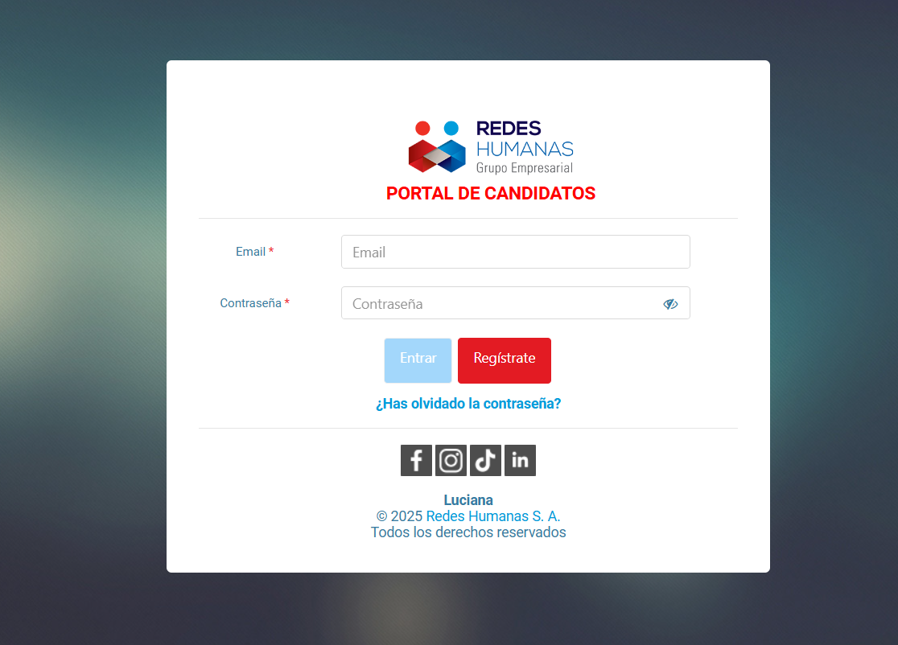
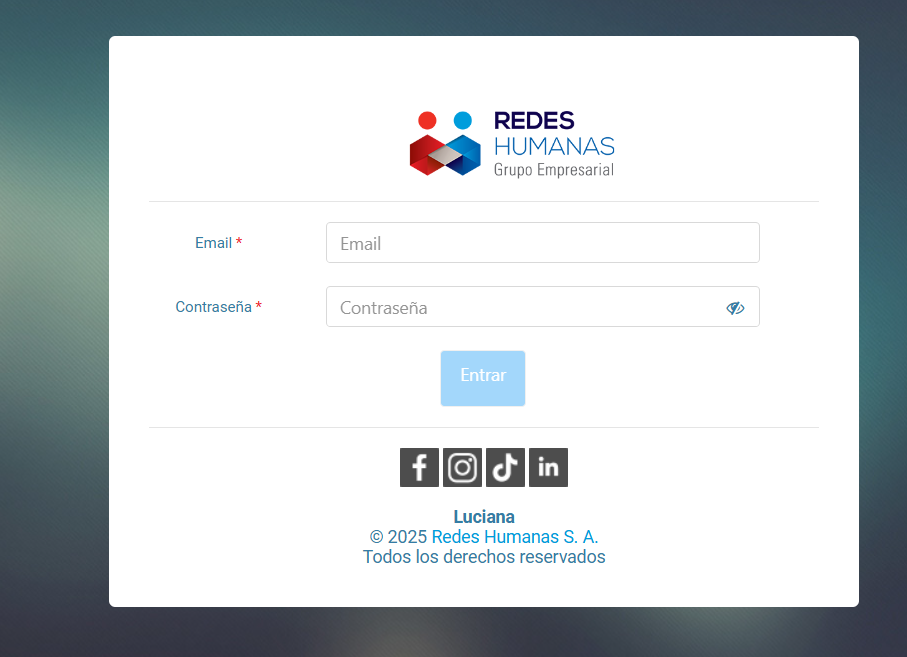
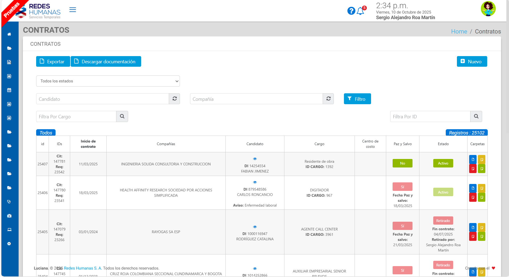
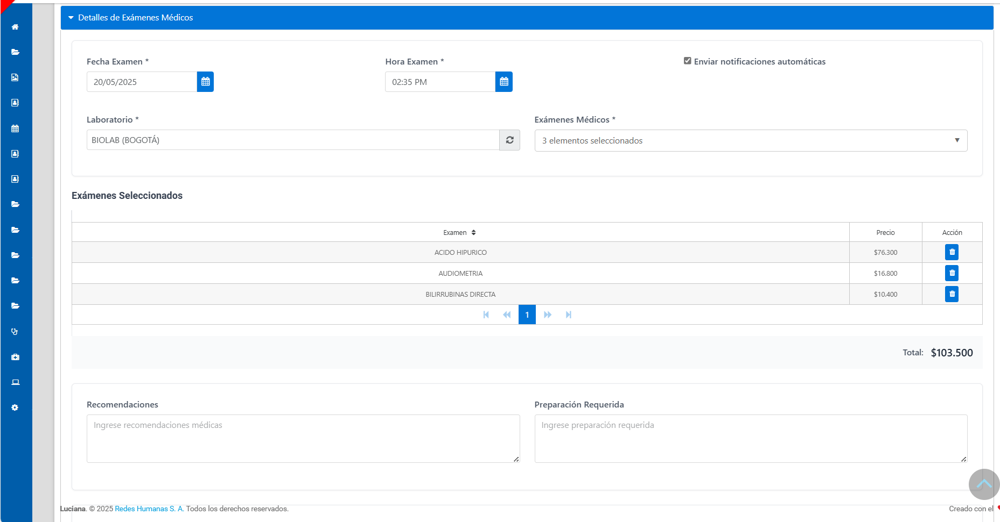
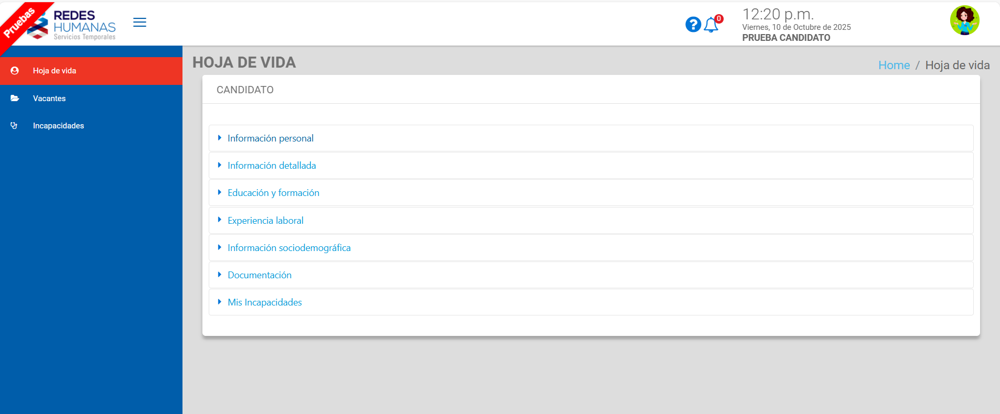
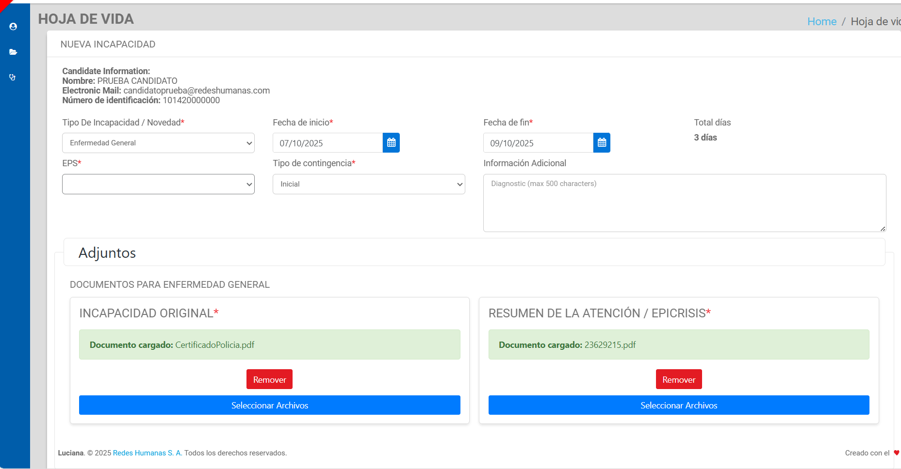

💼 Luciana – Human Resources Management Platform
📖 Overview and Context
Luciana was a comprehensive HR and recruitment platform with multi-user access (B2C and B2B). It was used by internal teams (recruitment, medical, accounting, support) and external users (candidates and partner companies).
The system centralized employee data, automated hiring processes, and generated documents, reports, and notifications.
My role was as a Full-stack Developer, actively contributing to maintenance, new feature development, and technical decision-making.
I also took on informal technical coordination, supporting other developers, conducting code reviews, and resolving critical incidents.
👤 Role and Contribution
- Main Role: Full-stack Developer (Backend & Frontend)
- Additional Contributions: Technical coordination, code reviews, and developer support
🛠️ Tech Stack
- Backend: Lumen Laravel 5.4 (production) / Lumen Laravel 11 (migration)
- Frontend: Angular v2 (legacy) / Angular 19 (partial migration)
- Database: MySQL and SQL Server
- Infrastructure: Google Cloud Platform (GCP) and on-premise instances
- Integrations: External APIs and Twilio (WhatsApp notifications)
🧭 System Architecture
The following diagram illustrates the main data flow and components within the Luciana platform.
graph TD
A[Frontend - Angular ] -->|HTTP REST| B[Backend - Lumen laravel]
B --> C[(MySQL / SQL Server)]
B --> D[Google Cloud Storage]
B --> E[External APIs / Twilio]
🖥️ Login Interfaces
| Candidate Portal | Employee Portal |
|---|---|
|  |  |
🚀 Main Features Developed
- Candidate Self-service Portal: Registration, job application, document upload, and leave management.
- Third-party Company Portal: Employee information dashboard for partner companies.
- Automated Data and Document Sync: Seamless synchronization between internal and external portals.
- Multichannel Notifications: Automated email and WhatsApp alerts.
- Dynamic Document Generation: Automatic creation of contracts, attachments, and ID cards by company or role.
- Occupational Health Modules: Management of sick leaves, medical cases, and occupational exams.
- Real-time Reporting: Internal control and auditing dashboards.
- Mass Processes: Bulk data and document generation from Excel.
🏆 Technical Achievements and Challenges
⚡ Performance Optimization
- Refactored inefficient logic from ApiHandler to optimized ORM queries using Laravel.
→ Result: Response times reduced from 15 s to 2–3 s, payload size reduced from 10 MB to 1.2 MB.
→ Impact: Improved server stability and enabled uninterrupted remote work.
☁️ Hybrid Storage Architecture
- Designed and implemented a hybrid storage system (local instance + Google Cloud Storage), migrating 1 TB of files without data loss.
→ Impact: 15–20 % reduction in infrastructure costs and improved scalability and security.
🧱 Frontend Migration (Angular v2 → v19)
- Planned and initiated the full frontend rewrite, establishing the core architecture and successfully migrating several key modules.
→ Demonstrated the project’s feasibility and immediate benefits in performance and developer experience.
➡️ See technical details of the migration project here
Note: The full migration was later paused due to a company reprioritization, but the initial phase I led provided a strong proof of concept and technical foundation for future modernization.
💡 Backend Migration (Lumen 5.4 → 11)
- Developed a proof of concept to validate backend migration ensuring full compatibility with Angular 19.
⚙️ Key Modules and Automations
1. Onboarding and Document Management (B2C)
- Designed the candidate self-service portal, from registration to document submission.
- Implemented automatic document reuse across processes, eliminating redundancy.
- Created data and document transfer logic between operations, increasing team efficiency by 25 %.
🔄 Onboarding Flow
flowchart LR
A[Candidate Registration] --> B[Uploading Documents]
B --> C[Data Validation]
C --> D[Verification by Human Resources]
D --> E[Contract Generation]
E --> F[Notification to the Candidate]
2. Efficiency and Bulk Processing
- Excel Batch Upload: Automated registration of thousands of candidates in bulk.
- Mass Document Generation: Simultaneous PDF downloads filtered by company, position, or document type.
3. Occupational Health and Compliance
- Sick Leave Module: Dynamic form system with validation and automated notifications.
- Medical Exam Module: Budgeting, scheduling, automatic templates, and multichannel notifications.
- Critical Medical Cases: Full traceability of workplace health and safety incidents (HSE).
🩺 Disabilities Module Flow
flowchart TD
subgraph Stage_1 [Loading and Validation]
A[Employee burdened with disability] --> B[Automatic initial validation]
end
subgraph Stage_2 [Initial Approval]
B --> C{Initial Approval}
C -->|Yes| D[Notification of processing to the employee]
C -->|No| E[Notification of rejection to the employee]
end
subgraph Stage_3 [Final Approval]
D --> F{Approval}
F -->|Yes| G[Notification of approval and payment to the employee]
F -->|No| H[Notification of rejection to the employee]
end
4. Internal Control and Auditing
- Dynamic Reports: Replaced weekly BI reports with real-time dashboards.
- Internal Ticketing Systems: Implemented two management systems — one for development requests (bugs, features) and one for IT support (printers, passwords), improving team workflow.
- Asset Inventory Module: Designed a system to manage company equipment (serials, user history, dates), optimizing purchasing planning.
📈 Quantifiable Impact
- Cost Reduction: Eliminated the need for external medical management providers.
- Time Savings: Decreased operational workload by 20–50 % in key tasks.
- Operational Stability: Removed server overload issues.
- Financial Control: Automated tracking of medical lab costs.
🌐 System Overview
| Contracts Module | Scheduling medical examinations |
|---|---|
|  |  |
| Candidate Portal | Disabilities |
|---|---|
|  |  |
🔍 Personal Reflection
Luciana represented a large-scale, multi-layered challenge with a complex legacy codebase. Through my involvement, I improved the system’s stability, scalability, and usability, leading the technical evolution and strengthening my expertise in hybrid architectures, performance optimization, and technical leadership.